Buzzoms is a fairly early-stage clothing brand for full-chested women. Brand’s aim stands to revolutionize the clothing industry by changing their mindset. Buzzoms brings trendy everyday wear, styled and designed for women with full cups. Having being launched recently, Buzzoms understood that they need to revamp the brand story to connect more with their users. And because of that, Buzzoms came to Brandathon for help.

Brandathon is a weekend-long branding hackathon featuring creatives from the worlds of design, copy, and strategy competing to rebrand early-stage startups that are being mentored by iconic founders, creative directors, and angel investors.
Brandathon usually has 2 different startups with 2 different creative teams competing against each other. But this time, it was a head-to-head battle between 2 teams designing for one single brand named Buzzoms. And the team with the better redesign wins the Brandathon.
Yazad Dastur - Brand Strategy/Copywriting
Vivian Baier - Social Strategy/Copywriting
Omar Sinada - Graphic Design
Collaborated with 3 incredibly talented creatives specializing in creative strategy, copywriting, and graphic design in a weekend long rebranding session. We created new brand guidelines, redesigned the landing page/e-commerce platform, and presented an updated pitch deck for ‘Buzzoms’, along with a thorough copywriting & social media strategy, all within 48 hours.
Used the ‘User-centered design’ process to create a basic structure focusing on the user problems. We use design frameworks to create an outline for the project, and due to the time constraint, we used a mix of ‘5 elements of UX Design’ along with ‘User-centered design’ for approaching the Buzzoms’ design decisions.
As our first step, we spoke to Marshay, the founder of Buzzoms to ensure that we understand the brand tone and its values. Our meeting ended with a discussion of the deliverables she wanted for Buzzoms. We reorganized the deliverables and grouped them into ‘Copy’ and ‘Design’ tasks, as the part of the Strategy phase of UX Design. And here are the details :
Copy :
- Solidifying brand voice/tone
- Creating a mission statement
- Creating product feature descriptions
- Writing product descriptions
Design :
- Creating brand consistency
- Designing a new landing page
- Redesigning the overall e-commerce experience
- Creating a customizable pitch deck
The main challenges :
- The brand story needs to be fleshed out
- The design assets need to be raised to the level of clothing
- The landing page needs to be more eye-catching and descriptive
- The e-commerce platform needs to be a more cohesive experience for shopping
After mapping out the challenges and tasks, we split ourselves into two groups to work simultaneously on Copy and Design. Yazad and Vivian handled the Copy, while Omar and I took the Design tasks.
While Omar started working on mood boards exploring colors and typography, I started doing research on the shopping needs, as part of the Scope phase of UX Design.
I further divided the research into two parts, consisting of a Shopper type research, and a complete audit to check the usability of Buzzom’s website/e-commerce platform, with the help of Jakob Nielsen's heuristic evaluation.
Started with shopper research as the first step for the Scope phase.
While designing for e-commerce we usually use shopper types. And so, here those 5 types that we identified to set user goals :
- Product Focused Users (Speed)
Helping them would be by having - Fast/Streamline checkouts ~ (From the UX standpoint, it's basically to Reduce the number of clicks to perform a task)
The way to hold them in is to show New product lineups, like new Arrivals/Upcoming products ~ (One way could be - to make A dedicated section for Popular Items)
The goal is to turn them into buyers by providing whatever information they seek. (One quick Idea could be - to show a comparison chart/diagram, to show how our product actually differs from others)
- Bargain Hunters (Savings)
So having newsletters/coupons/discount% - (And for this An Idea could be to add - A dedicated section for discounted items)
Showcasing more & more Product Images/ and Comparing with other brands, and simply to blow their minds ~ The main goal is to turn them into regular users (And An Idea could be adding a simple option like - Checking out as a guest/without signing up)
Did a heuristic evaluation to complete the Scope phase.
- Visibility of system status
There is no feedback for the user when clicking the Sign-Up button in the landing section of the homepage.
- Match between system and the real world
Color Options on the Product details page are text-based. Clicking on them (color option buttons), doesn't change the product color image. A clickable checkout button can't be viewed when sliding into the shopping cart details.
Users can't check the price of a product without getting into the product details page.
- Consistency and standards
Mixed usage of button-hover design for multiple instances. The logo in the top left doesn't take you to the homepage, and this breaks the consistent web design convention, which also prevents users from ever returning to the homepage.
Textboxes for signups do not provide feedback on internal errors, nor do they help the user prevent them. The form asks for a first and last name, yet will also accept a sign-up with just an email address. Yet, it is not mentioned that a name isn't required. Users can cart as many items as possible, without checking the stock from the product details page.
- Recognition rather than recall
The sign-up section acts as the only placeholder landing section. The website prompts the signup form every time a user visits, even if the user has already signed up.
- Flexibility and efficiency of use
When a page is scrolled, the menu cannot be accessed without returning to the top of the page. Neither does the page have a button to take users to the top of the page easily. Users can't get to know the product price until getting into the product details page.
- Aesthetics & Minimal design
The big chunk of text is hard to skim through due to a lack of consistent typography and usage of mixed alignment.
- Help users recognize, diagnose, and recover from errors
The website does handle page errors by redirecting to a separate error page and telling the users what went wrong without any technical jargon. However, Error codes are displayed to the user when internal errors or server errors occur, regardless of what the cause of the error is.
There's a dedicated search page, but could only be accessed from mobile devices & tablets, and not from desktops viewports. Messages stating features such as (Free return, Free Shipping & 100% Money-Back) are only visible on mobile devices & tablets.
The next step while designing the UI would be, to consider all the shopper needs and combine them with some incremental heuristic changes in the Structure phase, to create the best e-commerce experience for our users.
By the time, Omar and I completed working on the foundation for our design, Yazad and Vivian were ready with the copy for brand tone.
- The persona of ‘The Honest Girlfriend’
As close to family as a non-biological relative can be.
“She is your rock, support. She finds you a deal, she looks out for you. Checks your teeth for spinach. Openly speaks against injustice. Your success is her success. Doesn't let you fret. Provides a solution. Remains chic.”
The customer should feel like Buzzoms is a friend who provides solutions. When creating the copy, imagine your friend asks what she should wear tonight. You give her your honest opinion about clothes that you think would look great on her.
Before starting working on the UI, I reorganized the ‘Structure’ of the landing page, by shifting sections according to the needs of our users, and breaking down the information architecture of the whole site.
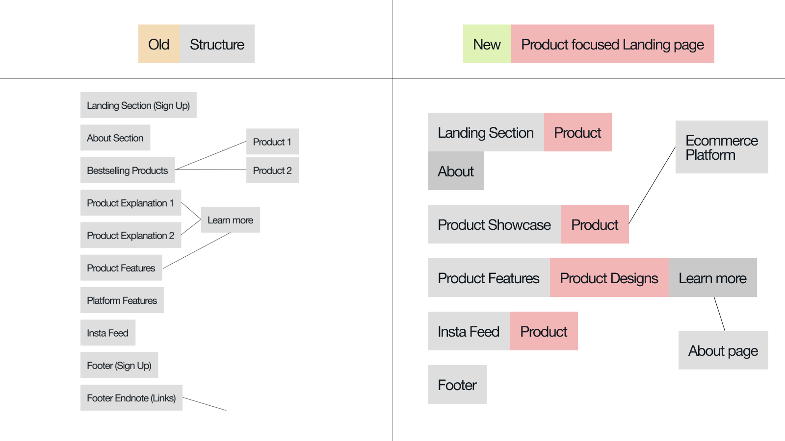
Omar and I started to work on the color and typography, while Yazad and Vivian started working on the web copy for the landing page.
We reimagined Buzzoms’ brand colors into a monochromatic palette, with 2 added neutrals of black and white. In order to make the brand more recognizable and distinct, we used the original orange as our primary color, to make sure that it expresses the feelings of excitement, enthusiasm, and warmth throughout the brand.
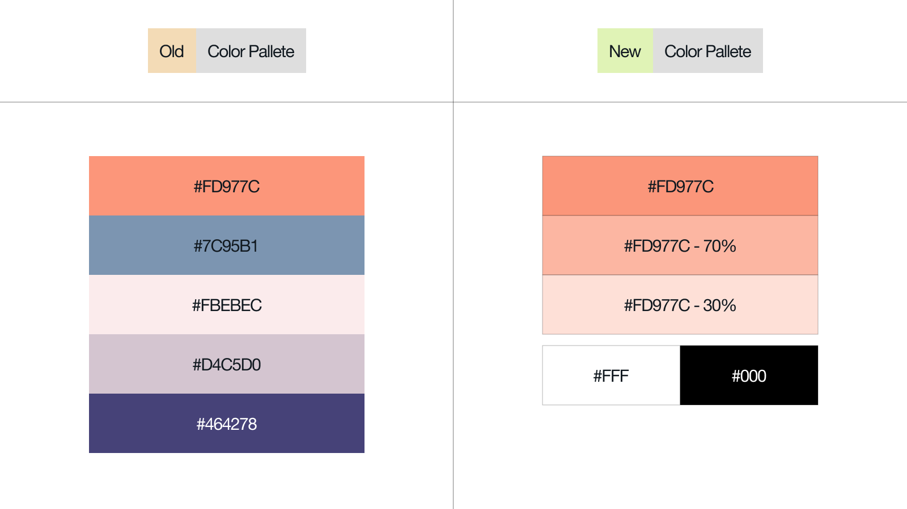
For typography, we decided to mix serif with sans serif, to showcase a visual hierarchy within the typefaces. The idea was to use an elegant serif typeface to take the lead on headings, and a commonly used sans serif acting as a supporting player for the paragraphs. So, we chose Bigila for the headers which clearly aligned with our confident and ambitious brand. And Poppins as the paragraph typeface, to have consistent legibility on the copy-heavy texts.
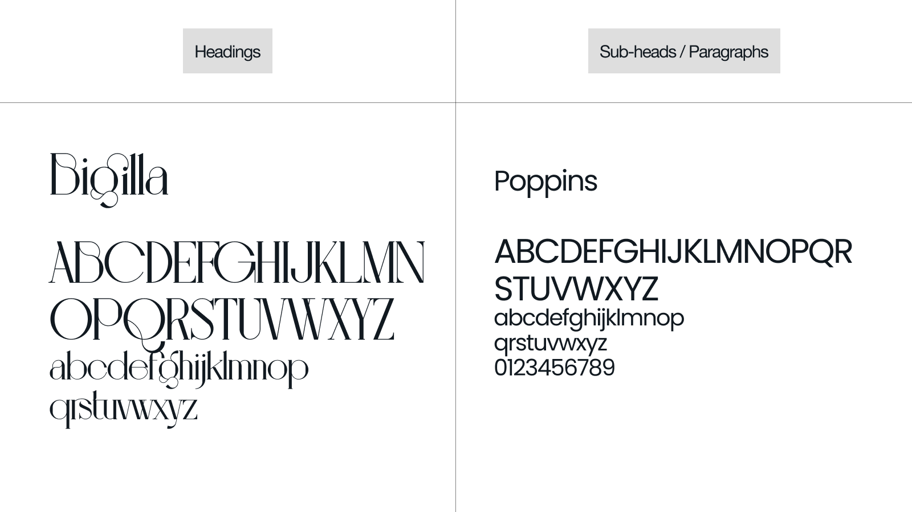
Omar redesigned the Buzzoms’ logo with the new typeface we selected for the brand.
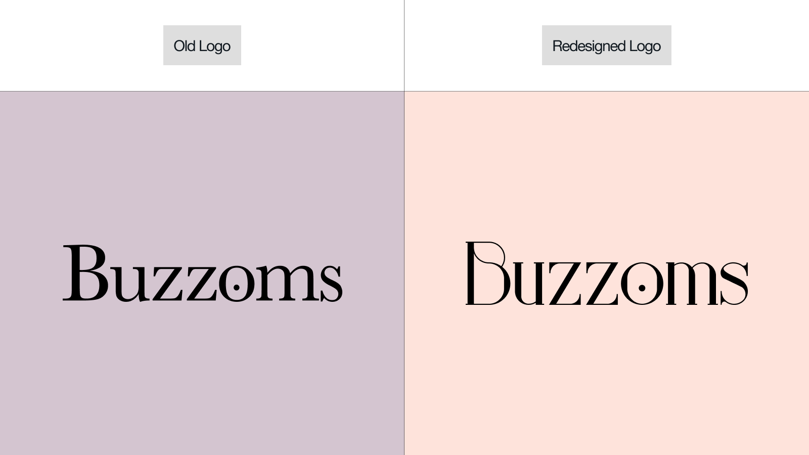
Going straight to the next phases of UX Design - Skeleton and Surface.
- Universal idea of using Big header typography to attract and hold the user's attention, while establishing a clear information hierarchy. Breaking header texts into parts and using indents to create a visual balance / visual harmony throughout the composition.
- Using dark colored text over a light background, for better visual contrast and proper legibility.
- Using images that support our newly formed brand tone, and tuning them to make sure they follow the same art direction.
- Using gradients to add depth to the design, and bridging the gap of energy and warmth (representing yellow & orange)
Adding the brand's tagline as the opening text, to make sure that the brand becomes more identifiable. Breaking sub-heading into 2 parts to illustrate brand’s aim, and brand’s work.
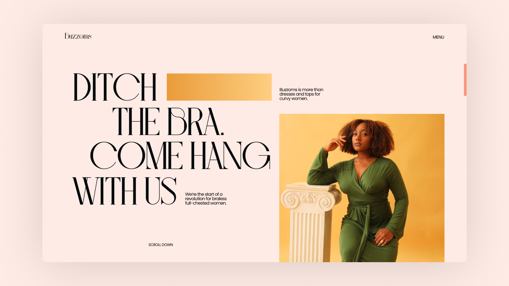
Continuing the same visual design. Showcasing the popular products, and adding prices underneath them. Adding a ‘View all products’ button, to a see the dedicated product page with all the products. Experimented with hover interactions, to get to the product details page, and check all the photos of a product.
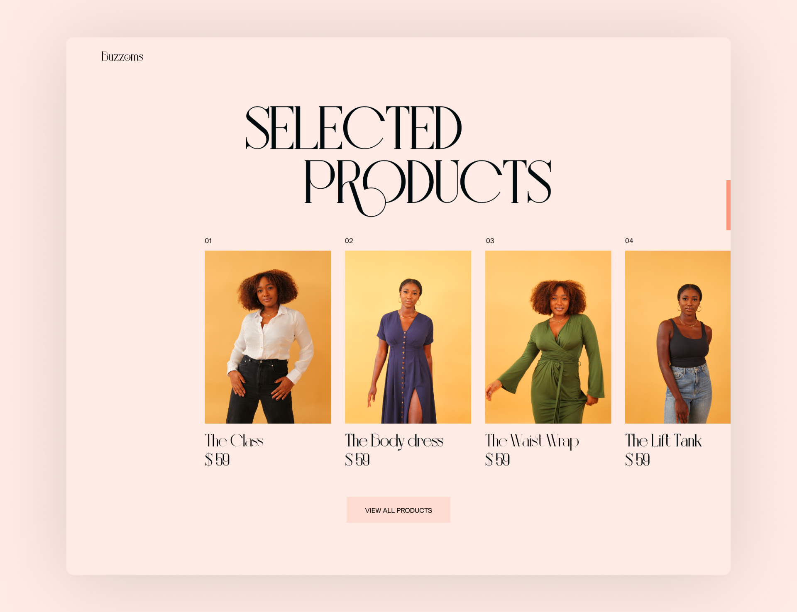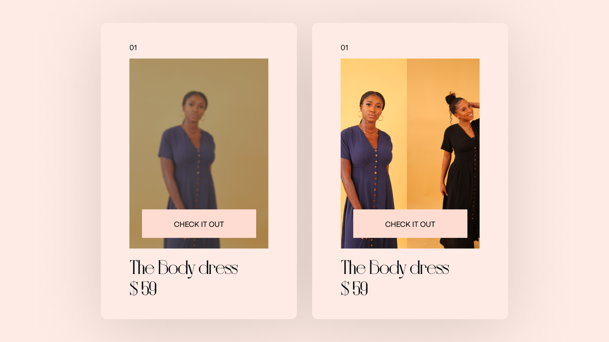
Created a column with 2 main features showcasing the uniqueness of the brand. Adding buttons to learn more about the features on a separate page.
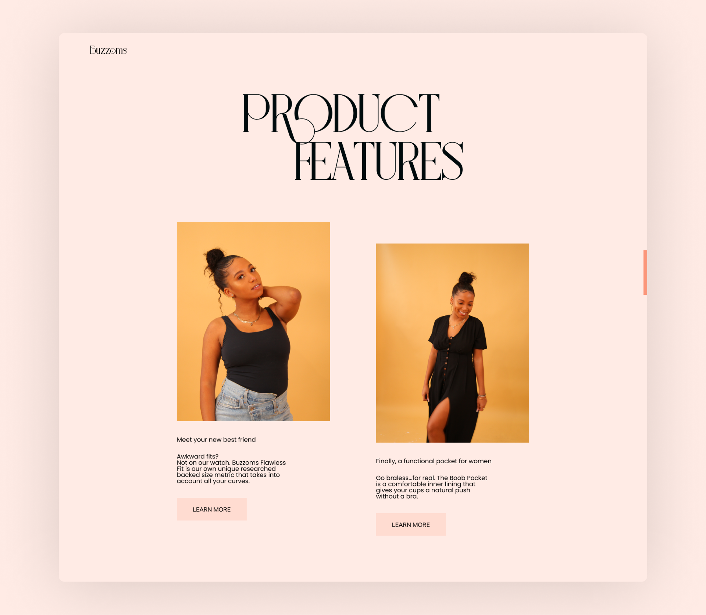
Designed an interactive section, with a replicated mockup of Buzzoms insta handle, along with user comments/reviews sliding in acting as the social proof for the brand.
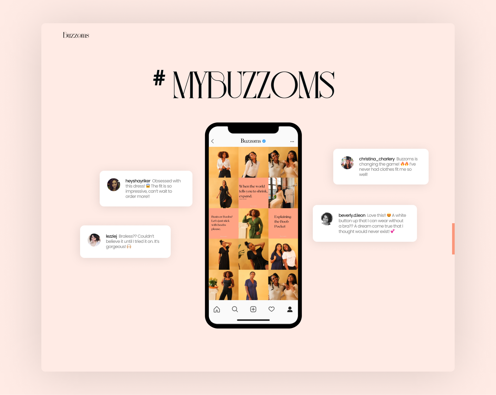
Shifted the newsletter sign-up card from hero to the footer section. Simplified the IE, and laid out the socials & information links into the footer.
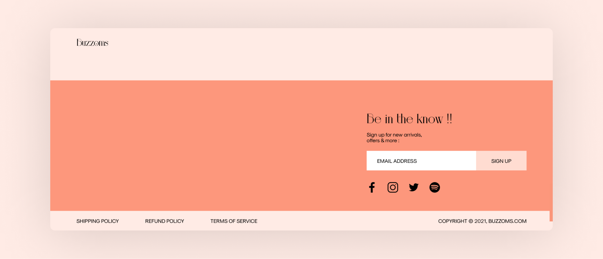
Created an overlay Menu, with links to the landing page sections as the elements of the menu.
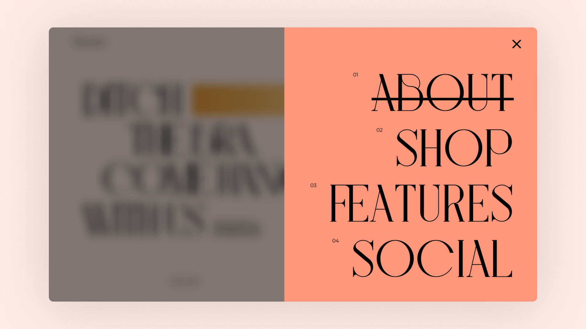